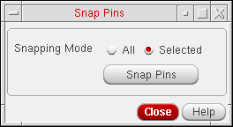

Snapping Selected Pins to Grid
Snap Pins can also snap selected top-level and level-1 pins to grid. The command works with both pre- and postselected pins.
To snap preselected pins to grid:
- Select the pins you want to snap in the layout window or Navigator assistant.
-
From the layout window menu bar, choose Connectivity – Pins – Snap Pins.
The Snap Pins form appears. -
Ensure that Snapping Mode is set to Selected.
 -
Click Snap Pins.
The selected top-level and level-1 pins are snapped to the appropriate grid.
To snap postselected pins to grid:
-
From the layout window menu bar, choose Connectivity – Pins – Snap Pins.
The Snap Pins dialog appears. - Ensure that Snapping Mode is set to Selected.
- Select the pins you want to snap in the layout window or Navigator assistant.
-
Click Snap Pins.
The selected top-level and level-1 pins are snapped to the appropriate grid.
In the Selected mode, when the pins with placement status as Fixed are snapped, the status of the pins is retained as Fixed.
Related Topics
Return to top